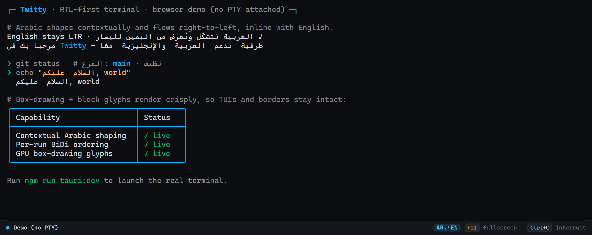
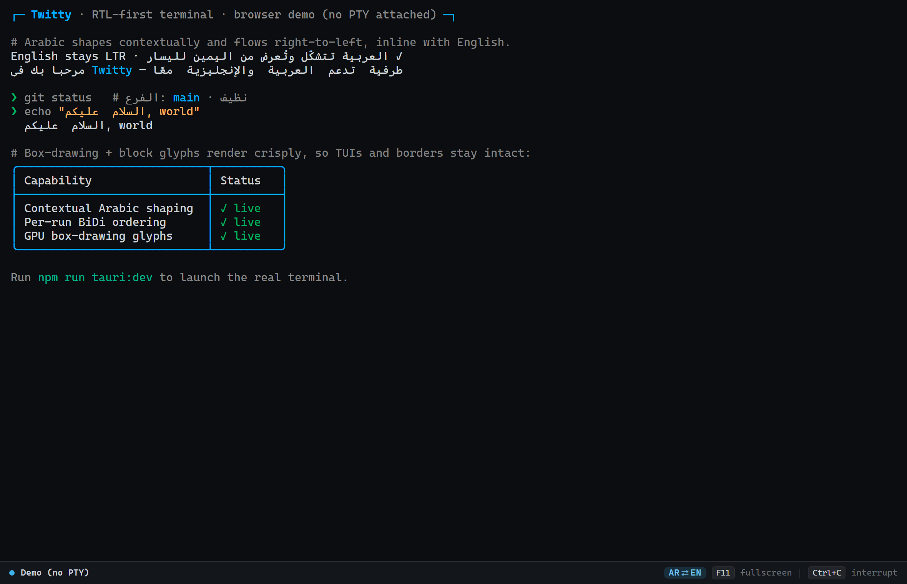

Twitty runs a real shell (PowerShell, Bash, Zsh) inside a pseudo-terminal and renders it with xterm.js. Mixed Arabic/English text is contextually shaped (letters take their correct initial, medial, final, or isolated forms and join) and ordered right-to-left per Arabic run — without ever rewriting the byte stream, so cursor positioning and TUI applications stay correct.

The Rust backend spawns a real shell inside a PTY and streams raw output to
the frontend via Tauri events. xterm.js handles ANSI parsing, cursor
movement, colors, and scrollback. Keystrokes flow back via
write_terminal; window resizes via resize_terminal.
The hard part of an Arabic terminal isn't shaping — it's shaping without corrupting the terminal. Stream-rewriting approaches change cell counts and columns, which desyncs the cursor and produces duplicated text in TUI apps. Twitty avoids this entirely:
1. The byte stream is never modified. Raw PTY output is written into xterm.js exactly as received, so the buffer stays in logical order.
2. A character joiner marks Arabic runs. A run begins and
ends on an Arabic letter and may include spaces between words, so
multi-word phrases order RTL together. The regex matches
[\u0600-\u06FF…] (?:[\u0600-\u06FF… ]*[\u0600-\u06FF…])?.
3. The DOM renderer draws each run through the browser's text engine, which applies native contextual shaping and right-to-left ordering inside the run only.
Because reordering happens at draw time and not in the buffer, cursor math, scroll regions, and alternate-screen redraws all stay correct.
| File | Responsibility |
|---|---|
XtermTerminal.tsx | xterm.js setup, Arabic character joiner, key handling |
StatusBar.tsx | Live connection / shell / AR⇄EN status bar |
pty.rs | PTY session lifecycle and raw I/O |
lib.rs | Tauri commands: start, write, interrupt, resize, stop |
build.yml | GitHub Actions: Windows + Linux builds and release |
| Layer | Technology |
|---|---|
| Shell | Tauri v2 (Rust core, system WebView) |
| Backend | Rust + portable-pty (ConPTY + Unix PTY) |
| Frontend | React 19 + Vite 6 + xterm.js 6 + addon-fit |
| Arabic Font | Noto Naskh Arabic (SIL OFL), bundled woff2 |
| Platform | WebView | Build Output |
|---|---|---|
| Windows | WebView2 (Chromium) | NSIS installer |
| Linux | webkit2gtk (WebKit) | .deb / .rpm / AppImage |
| macOS | WebKit | Buildable from source |
npm install npm run dev
Open the printed localhost URL. Shows a demo banner since there is no PTY in the browser.
npm install npm run tauri:dev
Requires Rust. Windows launches PowerShell; Unix uses $SHELL, falling back to /bin/bash.
npm run build npm run tauri:build

Why the DOM renderer, not WebGL? xterm.js offers a WebGL
renderer that rasterizes text into GPU glyph atlases. However, its atlas
clips Arabic glyph overhang strokes (like the descender arm of ك) and
inserts wide gaps between words in joined runs. The DOM renderer draws
Arabic through the browser's native text layout engine, which shapes and
orders it correctly. Box-drawing and block glyphs still tile seamlessly
with lineHeight: 1.0 and a proper monospace font stack.
Why render-layer, not stream-layer? Earlier approaches
rewrote PTY output before handing it to the renderer. This changed cell
counts and desynced cursor positioning, producing duplicated and misplaced
text in TUI apps. By moving shaping to the render layer (via
registerCharacterJoiner), the buffer stays in logical order
and all terminal semantics remain correct.